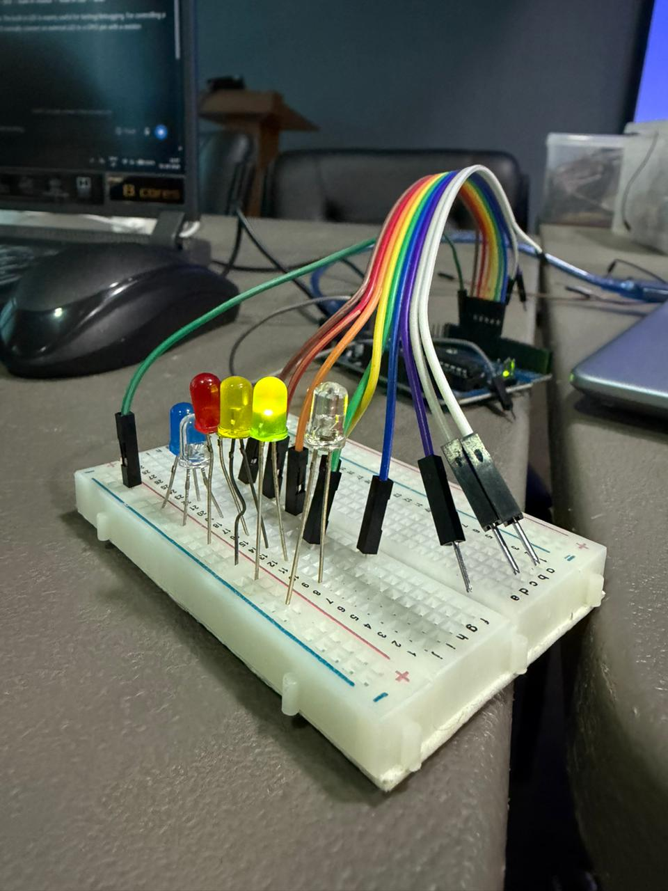

02Day 2
Computational Hardware & Embedded Systems
Sensing, processing and controlling the physical world.
Embedded systems are dedicated computing systems designed to perform specific functions. They combine hardware and software to sense, process information, and control physical outputs.
InputSensors
Switches
User commands
→Switches
User commands
ProcessingMicrocontrollers
Microprocessors
Embedded processors
→Microprocessors
Embedded processors
OutputLEDs
Motors
Actuators
Displays
Motors
Actuators
Displays
Microcontroller: A compact integrated circuit containing processing, memory, and peripherals for controlling embedded applications.
Microprocessor: A processing unit that generally relies on external memory and peripherals to form a complete computing system.
